The test statistic, 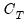, is calculated as the difference in J-statistics between the original equation and a secondary equation estimated using only 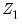 as instruments:
To perform the Instrumental Orthogonality Test in EViews, click on . A dialog box will the open up asking you to enter a list of the instruments for which the orthogonality condition may not hold. Click on and the test results will be displayed.
To perform the Regressor Endogeneity Test in EViews, click on . A dialog box will the open up asking you to enter a list of regressors to test for endogeneity. Once you have entered those regressors, hit and the test results are shown.
Where 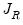 is a J-statistic calculated with the original equation’s residuals, but a GMM weighting matrix equal to the weighted (by number of observations) sum of the estimated weighting matrices from each of the subsample estimations.
To apply the GMM Breakpoint test, click on In the dialog box that appears simply enter the dates or observation numbers of the breakpoint you wish to test.


 are instruments for which the condition is assumed to hold.
are instruments for which the condition is assumed to hold. is the original weighting matrix,
is the original weighting matrix,  are the estimates from the test equation, and 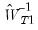 is the matrix for the test equation formed by taking the subset of 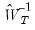 corresponding to the instruments in . The test statistic is Chi-squared distributed with degrees of freedom equal to the number of instruments in 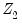.
are the estimates from the test equation, and 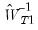 is the matrix for the test equation formed by taking the subset of 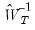 corresponding to the instruments in . The test statistic is Chi-squared distributed with degrees of freedom equal to the number of instruments in 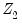. are the parameter estimates from the original TSLS or GMM estimation obtained using weights 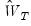, and
are the parameter estimates from the original TSLS or GMM estimation obtained using weights 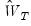, and  are the estimates from the test equation estimated using 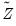, the instruments augmented by the variables which are being tested, and 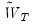 is the weighting matrix from the secondary estimation.
are the estimates from the test equation estimated using 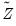, the instruments augmented by the variables which are being tested, and 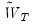 is the weighting matrix from the secondary estimation. , and then forms a new matrix 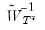, which is the subset of corresponding to the original instruments
, and then forms a new matrix 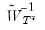, which is the subset of corresponding to the original instruments  . A third estimation is then performed using the subset matrix for weighting, and the test statistic is calculated as:
. A third estimation is then performed using the subset matrix for weighting, and the test statistic is calculated as: = the number of instruments,
= the number of instruments,  = the number of regressors,
= the number of regressors,  = the number of observations,
= the number of observations,  = the estimation covariance matrix,
= the estimation covariance matrix, . is the same between subsamples), the GMM breakpoint statistic lets the variance-covariance matrix of the error terms vary between the subsamples.
. is the same between subsamples), the GMM breakpoint statistic lets the variance-covariance matrix of the error terms vary between the subsamples. ,
,  refers to the number of observations in subsample
refers to the number of observations in subsample  , and 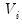 is the estimate of the variance-covariance matrix for subsample
, and 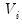 is the estimate of the variance-covariance matrix for subsample  .
. distribution with
distribution with  degrees of freedom, where m is the number of subsamples, and k is the number of coefficients in the original equation. The O-statistic also follows an asymptotic
degrees of freedom, where m is the number of subsamples, and k is the number of coefficients in the original equation. The O-statistic also follows an asymptotic  distribution, but with 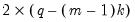 degrees of freedom.
distribution, but with 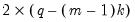 degrees of freedom.